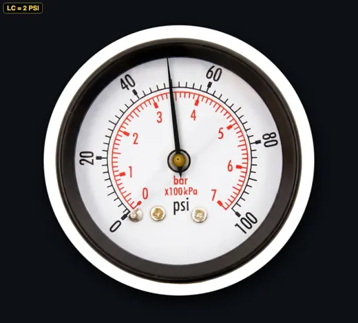
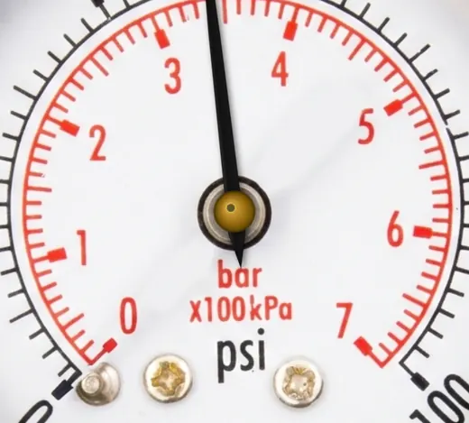

Pressure Gauge Simulator
Interactive pressure measurement trainer — 0–100 PSI — LC = 2 PSI
1 Overview
This pressure gauge simulator is a free online tool for practising how to read a pressure gauge with a Bourdon tube dial display. Covering 0–100 PSI with a 2 PSI least count, the simulator shows a dual-scale analogue gauge reading in PSI, BAR, and kPa simultaneously. It is designed for engineering students, pneumatics and hydraulics trainees, automotive technology learners, and HVAC technicians who need to develop accurate analogue gauge reading skills. The simulator includes practice exercises and a timed quiz for exam preparation.
2 Setting the Zero
The simulator opens in Simulate mode with the needle set to a default pressure. To begin:
- Click and drag the needle around the dial to set any pressure from 0 to 100 PSI. You can also use arrow keys or the scroll wheel for 2 PSI increments.
- The info row below the gauge shows the reading in three units: PSI, BAR, and kPa.
- The formula panel displays live unit conversions: 1 BAR = 14.504 PSI = 100 kPa.
- Use the Zoom button to magnify the dial face for reading between graduation marks.
3 Taking a Reading
In Simulate mode the needle moves freely around the Bourdon tube gauge dial. The gauge face displays major and minor divisions — each minor division equals the least count of 2 PSI. As you move the needle, the conversion panel calculates the equivalent BAR and kPa values in real time. This mode helps you become comfortable with reading analogue dials, interpolating between graduation marks, and recognising the relationship between PSI, BAR, and kPa. Understanding dual-scale gauges is a critical competency in pneumatics, fluid power, and process instrumentation.
4 Practice & Quiz
Practice mode: The needle is set to a random pressure and locked. Your task is to read the PSI value from the gauge dial and type it into the input box. Click Check for instant feedback. Click New for another random reading. Your running score is tracked.
Quiz mode: A timed series of 5 pressure readings tests your gauge reading speed and accuracy. After all questions, a results panel shows your score, star rating, and a per-question breakdown with correct answers.
5 Understanding Pressure Units
This simulator reinforces the three most common pressure units used in industry:
- PSI (pounds per square inch): Common in the US and in tyre pressure, hydraulic systems, and compressed air.
- BAR: Widely used in Europe and industrial settings. 1 BAR = 14.504 PSI.
- kPa (kilopascals): The SI-derived unit. 1 BAR = 100 kPa exactly.
Being able to convert between units quickly is essential for reading dual-scale gauges found on compressors, boilers, and hydraulic test benches.
6 Workshop Tips
- On a real gauge, read the needle from directly in front to avoid parallax error — many industrial gauges have a mirror band on the dial to help with alignment.
- Count the number of minor divisions between two major marks to confirm the resolution before reading — never assume all gauges have the same least count.
- For fluctuating pressures, use a gauge with a liquid-filled (glycerine) case to dampen needle vibration and get a stable reading.
- Always verify the gauge is zeroed at atmospheric pressure (no load) before taking measurements to ensure accuracy.
How to Read a Pressure Gauge — Online PSI BAR kPa Practice

A pressure gauge measures the pressure of gases or liquids in pipelines, tanks, cylinders, and hydraulic systems. This free online simulator covers 0–100 PSI with 2 PSI least count and a dual scale showing PSI, BAR and kPa simultaneously — essential for students in pneumatics, hydraulics, and fluid power training.
Pressure-gauge reading is one of those skills that looks trivial until you watch a student misread a kPa scale as PSI on a workshop quiz. The trick I drill: name the units out loud before the number. "Forty-two PSI" forces a different mental check than "forty-two." In a noisy plant that habit saves arguments later about whether a tank is at 40 PSI or 40 bar — a 14× difference.
How to Read an Analogue Pressure Gauge
Step 1: Identify the scale units (PSI, BAR, or kPa). Step 2: Count the number of divisions between major marks to find the value of each small division. For this simulator each small division = 2 PSI. Step 3: Read the needle position — if it falls between marks, interpolate to the nearest graduation.
Pressure Unit Conversions
Key conversions to memorise: 1 BAR = 14.504 PSI, 1 BAR = 100 kPa, 1 PSI ≈ 6.895 kPa. The dual-scale gauge in this simulator displays all three simultaneously, reinforcing unit recognition — a critical competency in pneumatics, HVAC, automotive, and process instrumentation training.

Types of Pressure Gauges
Common types include: Bourdon tube gauges (most common for industrial applications), diaphragm gauges (for low pressures and corrosive media), and digital pressure gauges (for high-accuracy electronic measurement). This simulator models the standard Bourdon-type analogue gauge. The Bourdon tube was patented by Eugène Bourdon in 1849 and remains the dominant industrial pressure-sensing element more than 170 years later — partly because it has no electronics to fail and partly because the mechanical linkage is intuitive to inspect and calibrate.
How a Bourdon Tube Actually Works
Inside the case sits a hollow, oval-section metal tube bent into a near-circle. When pressurised fluid enters the tube, the oval cross-section tries to become more round, which forces the bent tube to straighten slightly. A linkage at the free tip converts that small straightening motion into rotation of the pointer through a sector gear and pinion. Typical pointer movement is roughly 270° for full-scale pressure. Three details to know: the tube material (phosphor bronze for general service, stainless 316 for chemical and food work), the case fill (dry case for < 100 bar, glycerine-filled for vibration), and the accuracy class — ASME B40.100 grades range from 4A (±0.1%) through A (±1%) to D (±5%), and most workshop gauges are Grade B (±2%).
Worked Example — Pneumatic Cylinder Sizing from a Gauge Reading
A pneumatic cylinder is connected to a shop air line and the regulator gauge reads 72 PSI. The cylinder bore is 50 mm. What clamping force does the cylinder deliver on extend?
Convert pressure to SI: 72 PSI × 6.895 = 496.4 kPa = 0.4964 N/mm². Bore area A = (π/4) × 50² = 1963.5 mm². Force F = P × A = 0.4964 × 1963.5 = 974 N (about 99 kgf). Notice how a 1 PSI error on the gauge changes the force by ≈ 14 N. On gauges with a 2 PSI least count, your force estimate is good to roughly ±30 N before you even get to the cylinder seal friction — which is why a 200 PSI gauge used to read 30 PSI is the wrong tool for the job (most analogue gauges are most accurate in the middle two-thirds of their range).
Five Common Pitfalls When Reading a Pressure Gauge
- Reading the wrong scale. On a dual-scale gauge, students routinely read the inner ring (kPa) thinking it is PSI. Always state the unit before the number.
- Ignoring parallax. Looking at the needle from an angle shifts the apparent reading by up to a full division. Position your eye perpendicular to the dial; some industrial gauges have a mirror band on the dial specifically to eliminate parallax.
- Using the wrong range gauge. A 0–400 PSI gauge used to read 20 PSI line pressure is operating in its bottom 5% — well outside the accurate band. Pick a gauge whose normal working pressure sits between 25% and 75% of full scale.
- Forgetting calibration drift. Bourdon tubes work-harden with cyclic loading. ISO 9001 quality systems require annual recalibration against a deadweight tester; in critical service (boiler safety, medical gases) the interval is six months.
- Confusing gauge pressure with absolute pressure. A gauge reads zero at atmospheric pressure; absolute pressure adds 14.7 PSI (1.013 bar). When the textbook says "absolute pressure", add 14.7 to the gauge reading before plugging into the ideal-gas law.
Standards and References
For deeper study, see ASME B40.100 (Pressure Gauges and Gauge Attachments), EN 837-1 (Bourdon tube pressure gauges), ISO 5171 (welding pressure gauges) and NIST Handbook 44 for legal-for-trade applications. Most general engineering and instrumentation textbooks — Holman's Experimental Methods for Engineers, Doebelin's Measurement Systems — carry a chapter on pressure measurement that covers gauge selection, installation snubbers, and pulsation damping.
Who Uses This Simulator?
Designed for pneumatics and hydraulics students, automotive technology trainees, HVAC technicians in training, process plant operators, and any engineering education learner who needs to demonstrate pressure gauge reading competency.
Explore Related Simulators
If you found this Pressure Gauge simulator helpful, explore our Pascal’s Law simulator, Bernoulli’s Principle simulator, and Fluid Flow simulator for more hands-on practice.